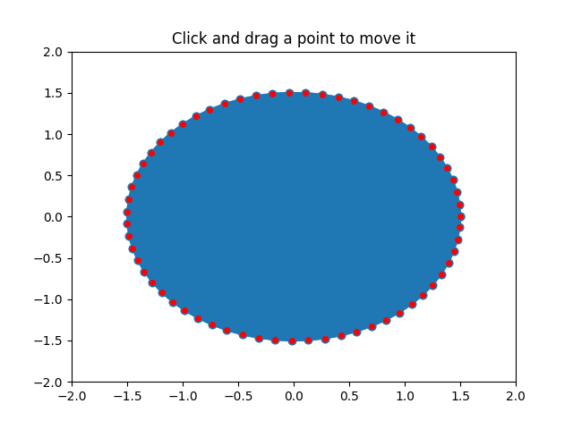

Version 2.2.0
This is an example to show how to build cross-GUI applications using Matplotlib event handling to interact with objects on the canvas.
import numpy as np
from matplotlib.lines import Line2D
from matplotlib.artist import Artist
from matplotlib.mlab import dist_point_to_segment
class PolygonInteractor(object):
"""
A polygon editor.
Key-bindings
't' toggle vertex markers on and off. When vertex markers are on,
you can move them, delete them
'd' delete the vertex under point
'i' insert a vertex at point. You must be within epsilon of the
line connecting two existing vertices
"""
showverts = True
epsilon = 5 # max pixel distance to count as a vertex hit
def __init__(self, ax, poly):
if poly.figure is None:
raise RuntimeError('You must first add the polygon to a figure '
'or canvas before defining the interactor')
self.ax = ax
canvas = poly.figure.canvas
self.poly = poly
x, y = zip(*self.poly.xy)
self.line = Line2D(x, y,
marker='o', markerfacecolor='r',
animated=True)
self.ax.add_line(self.line)
self.cid = self.poly.add_callback(self.poly_changed)
self._ind = None # the active vert
canvas.mpl_connect('draw_event', self.draw_callback)
canvas.mpl_connect('button_press_event', self.button_press_callback)
canvas.mpl_connect('key_press_event', self.key_press_callback)
canvas.mpl_connect('button_release_event', self.button_release_callback)
canvas.mpl_connect('motion_notify_event', self.motion_notify_callback)
self.canvas = canvas
def draw_callback(self, event):
self.background = self.canvas.copy_from_bbox(self.ax.bbox)
self.ax.draw_artist(self.poly)
self.ax.draw_artist(self.line)
# do not need to blit here, this will fire before the screen is
# updated
def poly_changed(self, poly):
'this method is called whenever the polygon object is called'
# only copy the artist props to the line (except visibility)
vis = self.line.get_visible()
Artist.update_from(self.line, poly)
self.line.set_visible(vis) # don't use the poly visibility state
def get_ind_under_point(self, event):
'get the index of the vertex under point if within epsilon tolerance'
# display coords
xy = np.asarray(self.poly.xy)
xyt = self.poly.get_transform().transform(xy)
xt, yt = xyt[:, 0], xyt[:, 1]
d = np.hypot(xt - event.x, yt - event.y)
indseq, = np.nonzero(d == d.min())
ind = indseq[0]
if d[ind] >= self.epsilon:
ind = None
return ind
def button_press_callback(self, event):
'whenever a mouse button is pressed'
if not self.showverts:
return
if event.inaxes is None:
return
if event.button != 1:
return
self._ind = self.get_ind_under_point(event)
def button_release_callback(self, event):
'whenever a mouse button is released'
if not self.showverts:
return
if event.button != 1:
return
self._ind = None
def key_press_callback(self, event):
'whenever a key is pressed'
if not event.inaxes:
return
if event.key == 't':
self.showverts = not self.showverts
self.line.set_visible(self.showverts)
if not self.showverts:
self._ind = None
elif event.key == 'd':
ind = self.get_ind_under_point(event)
if ind is not None:
self.poly.xy = np.delete(self.poly.xy,
ind, axis=0)
self.line.set_data(zip(*self.poly.xy))
elif event.key == 'i':
xys = self.poly.get_transform().transform(self.poly.xy)
p = event.x, event.y # display coords
for i in range(len(xys) - 1):
s0 = xys[i]
s1 = xys[i + 1]
d = dist_point_to_segment(p, s0, s1)
if d <= self.epsilon:
self.poly.xy = np.insert(
self.poly.xy, i+1,
[event.xdata, event.ydata],
axis=0)
self.line.set_data(zip(*self.poly.xy))
break
if self.line.stale:
self.canvas.draw_idle()
def motion_notify_callback(self, event):
'on mouse movement'
if not self.showverts:
return
if self._ind is None:
return
if event.inaxes is None:
return
if event.button != 1:
return
x, y = event.xdata, event.ydata
self.poly.xy[self._ind] = x, y
if self._ind == 0:
self.poly.xy[-1] = x, y
elif self._ind == len(self.poly.xy) - 1:
self.poly.xy[0] = x, y
self.line.set_data(zip(*self.poly.xy))
self.canvas.restore_region(self.background)
self.ax.draw_artist(self.poly)
self.ax.draw_artist(self.line)
self.canvas.blit(self.ax.bbox)
if __name__ == '__main__':
import matplotlib.pyplot as plt
from matplotlib.patches import Polygon
theta = np.arange(0, 2*np.pi, 0.1)
r = 1.5
xs = r * np.cos(theta)
ys = r * np.sin(theta)
poly = Polygon(np.column_stack([xs, ys]), animated=True)
fig, ax = plt.subplots()
ax.add_patch(poly)
p = PolygonInteractor(ax, poly)
ax.set_title('Click and drag a point to move it')
ax.set_xlim((-2, 2))
ax.set_ylim((-2, 2))
plt.show()